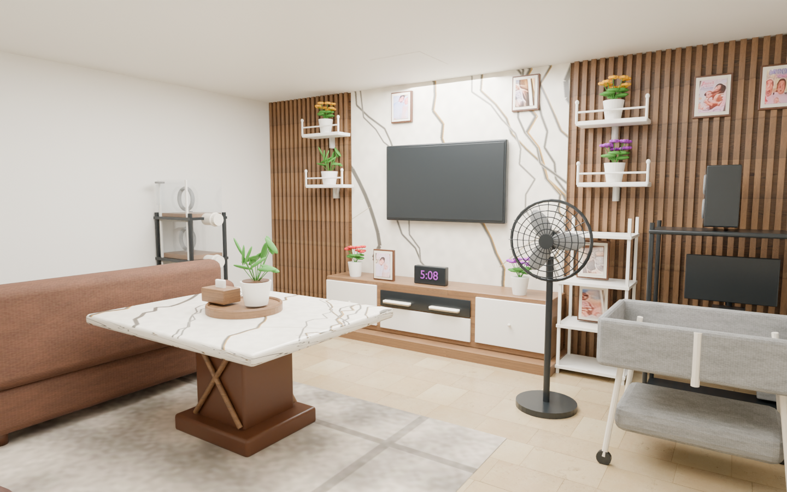
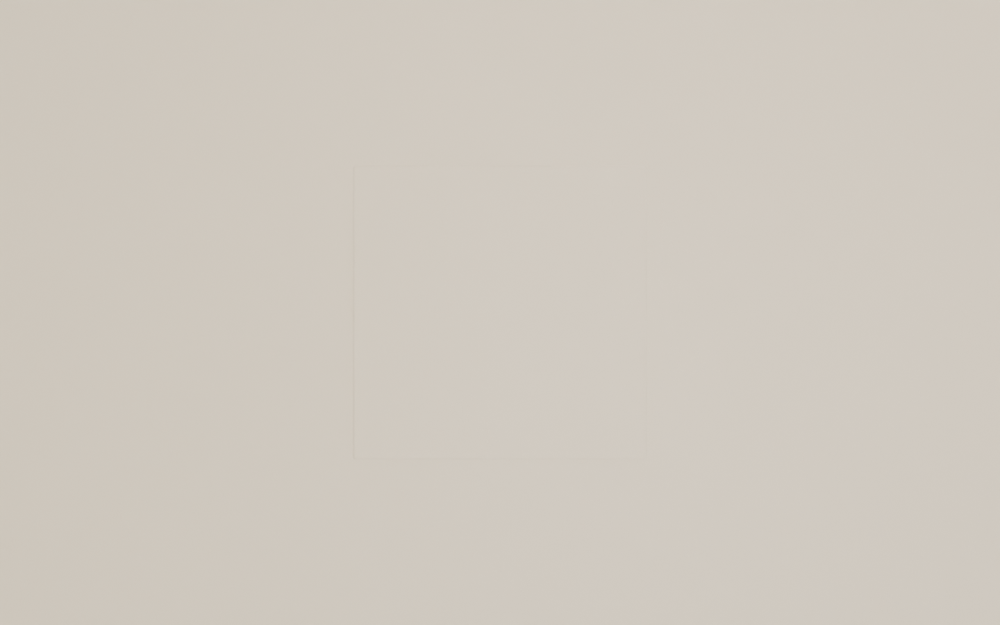
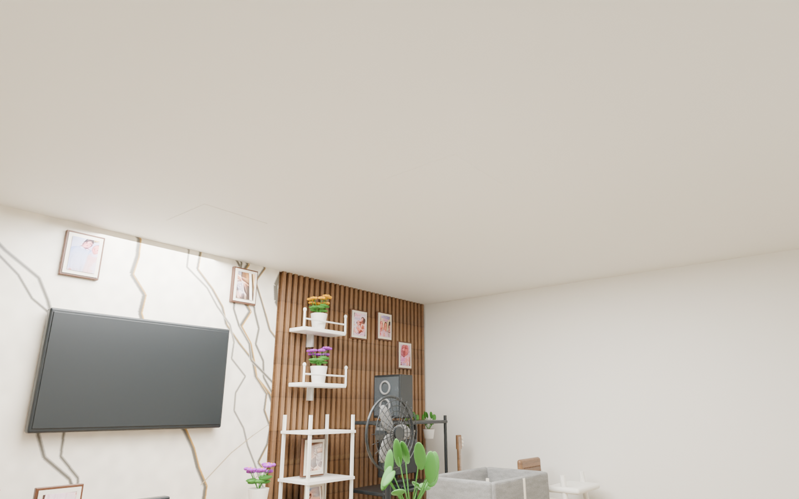
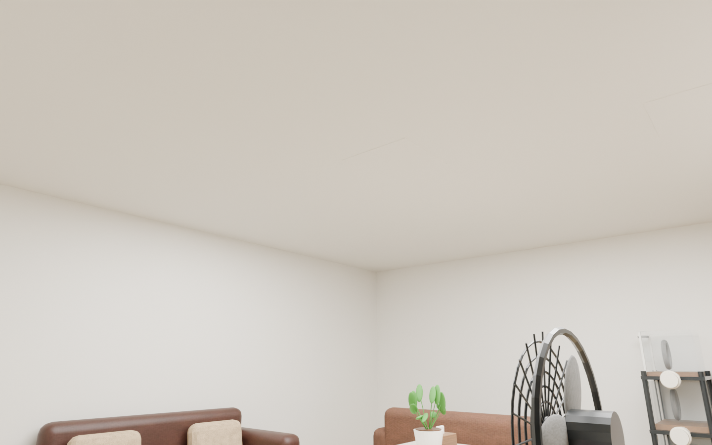

Interior — Final Blender room review
By Aljay Leodones
Function approved by the owner. Form review pending: approve the final room before it can be exported into Godot. Runtime review and publication follow separately.
Production camera

The room follows the approved estimated layout. Furniture backs, walls outside the photograph, and ceiling remain inferred. Texture and fine-detail differences from the photograph remain; this is not a measured photogrammetry scan.
Four corner views
Ceiling and attachment views

Center looking up

Ceiling from front left

Ceiling from rear right
Geometry and provenance
{"structuralManifold": true, "fullHeightWalls": true, "thickSubstrates": true, "sourceMeters": true, "noUnscheduledApertures": true}
Custom procedural meshes and authored textures; free wood and floor marble textures from Poly Haven (CC0). Miniature frame inserts use the supplied reference photo. No paid asset generation.
Shell substrates have thickness and closed manifold meshes. The home layout is intentionally asymmetric. No doorway was visible, so the approved room starts the player inside with closed inferred rear walls. The sofas face the table and TV. Movable furnishings will use compound physics colliders, and wall props will detach when grabbed.
Final Blender source · Measured geometry audit · Approved Function study
Approve this final room geometry and appearance to proceed with the Godot room export. The final executable, Android APK, and repository push require the later Runtime review.